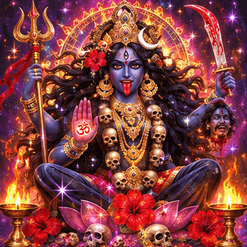

🌸 🪷 💖 🌷 🪷 🌸
MAA LAKSHMI
🪷 🌺 ✨ 🌼 🪷
ॐ श्रीं महालक्ष्म्यै नमः
Om Shreem Mahalakshmyai Namah
An invocation associated with gratitude, beauty and abundance.
🎶 Lakshmi Mantra Meditation
When your recording is ready, paste its public YouTube link below.
THE SELF-HEALING SANCTUARY
🌈 A cosmic library of practices for body, mind, spirit & creative expression 🔱
🌺 🪷 🔥 🌼 ✨ 🌼 🔥 🪷 🌺
Three devotional spaces honouring Lakshmi, Mahakali and Parvati. A free offering of love, mantra and stillness.
ॐ श्रीं महालक्ष्म्यै नमः
Om Shreem Mahalakshmyai Namah
An invocation associated with gratitude, beauty and abundance.
When your recording is ready, paste its public YouTube link below.

ॐ क्रीं कालिकायै नमः
Om Kreem Kalikayai Namah
An invocation associated with courage, protection and transformation.
Watch the featured Mahakali video below, or paste another YouTube link.
ॐ पार्वत्यै नमः
Om Parvatyai Namah
An invocation associated with tenderness, devotion and inner strength.
When your recording is ready, paste its public YouTube link below.
🌸 A devotional offering, freely shared. Videos only play when you choose to open them. 🌸
Explore at your own pace. Choose a practice that feels supportive today. Every doorway offers a gentle starting point, with room for curiosity rather than pressure.
This is a creative and educational wellbeing resource, not medical treatment. Spiritual traditions and emerging wellness ideas are presented without promises of cures.
Unclench your jaw. Feel your feet. Take a comfortable, unforced breath. You don't have to achieve anything right now.
Visit Phoenix Avalon Gold on YouTube for original creative and spiritual content.